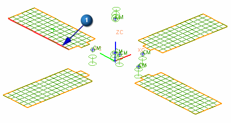
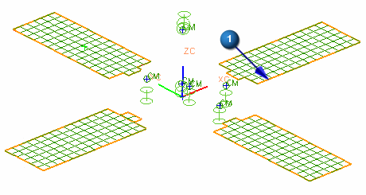

Define the material orientation
Shell and solid elements have unique element coordinate systems that are defined by their node locations, and the order in which the nodes are labeled. It is possible that elements in the same mesh have different element orientations, even if the mesh is planar. You can define a material orientation that is independent of the mesh. The material coordinate system is created by projecting the specified coordinate system onto the plane of the element.
Define the material orientation for the shell elements in the two solar panel meshes.
 Simulation Navigator
Simulation Navigator
-

 2D Collectors (expand)
2D Collectors (expand)
-
Honeycomb_Collector (expand)
-
2d_mesh(5)
-
 Edit Mesh Associated Data
Edit Mesh Associated Data -
Material Orientation Method
Vector

-
 Inferred Vector (Specify Vector)
Inferred Vector (Specify Vector)
-
Type Filter (Selection Bar)
Polygon Edge
-
 the long polygon edge for the X-axis
the long polygon edge for the X-axis

-
OK
-
Repeat the above steps for the second solar panel mesh (2d_mesh(6)).
